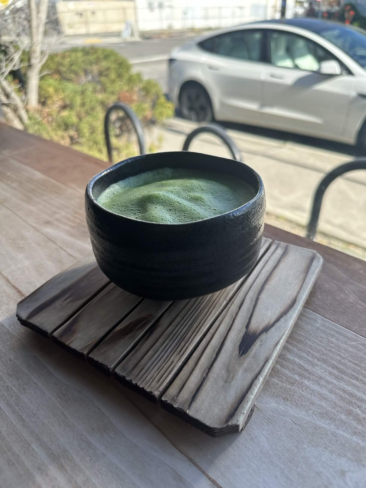
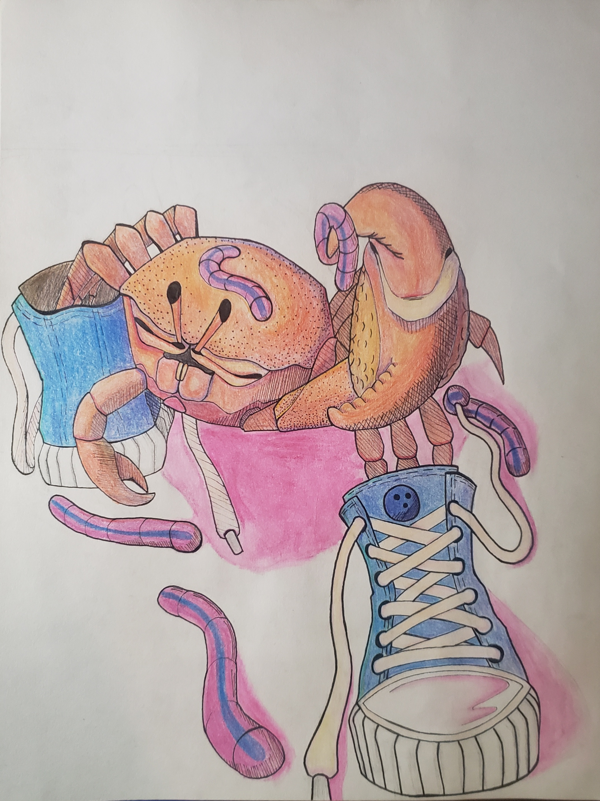
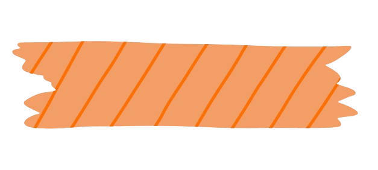

About Me




Hi! I'm Marvin. Outside of computer science, I try to live a relatively relaxed life. I love traveling, cooking, cafes, matcha, hitting the gym, and drawing. Another hobby of mine that I take very seriosuly is language-learning. I am a self-taught intermediate Spanish learner and I'm currently reviewing my Japanese to prepare myself for an internship in Japan this summer.